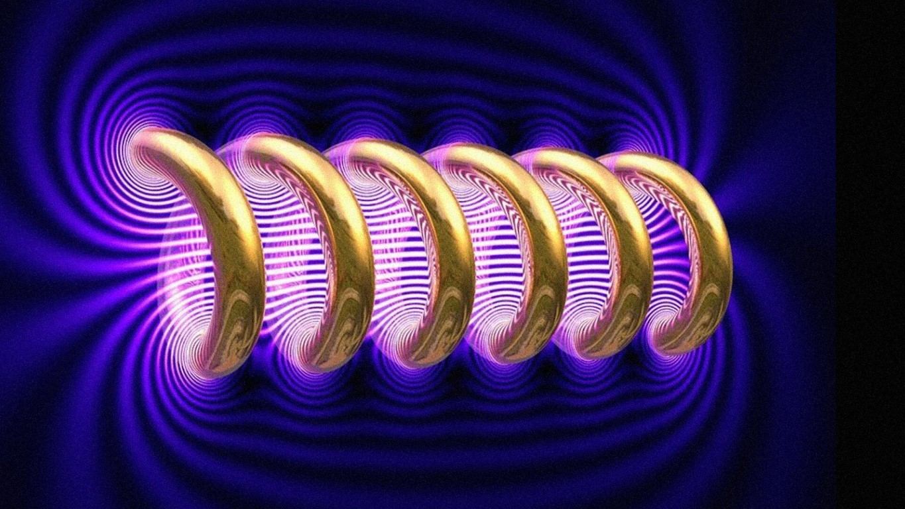

La luz visible (luz blanca) representa mucho menos que el 1% del espectro electromagnético. Si. La luz es menos del 1% de todo el espectro de ondas que existe.
La luz blanca está compuesta por la superposición de todo el espectro de la luz visible. De mayor a menor longitud de onda, va desde el rojo, el naranja, el amarillo, el verde, el celeste, el azul y el violeta (como la tapa de “The Dark Side of the Moon”). Y es visible porque estas longitudes de onda excitan las células nerviosas del ojo, y el cerebro las decodifica como cada color.
Lo disruptivo es que más de un 99% de lo que vibracionalmente está sucediendo a nuestro alrededor, es imperceptible para el sentido de la visión (de los cinco sentidos físicos, aquel por donde más información ingresa). Digamos: nuestro principal radar NO DETECTA la enorme mayoría de data que está sucediendo en la escena.
RECORDATORIO para cuando pensemos que “lo entendemos todo”. No, no entendemos todo.